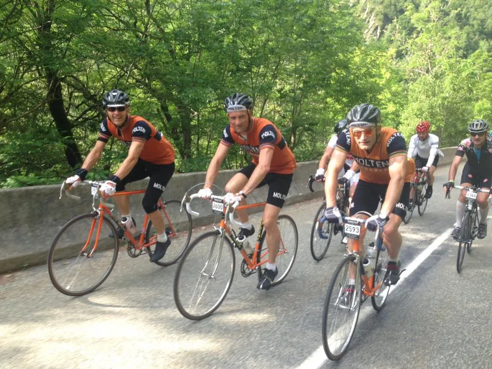
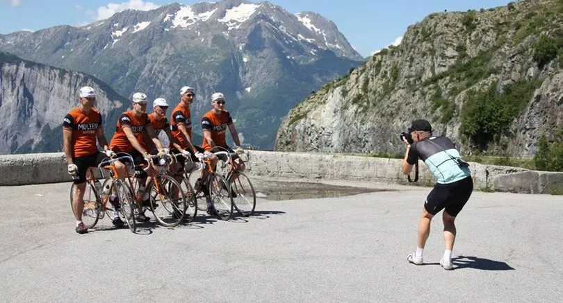
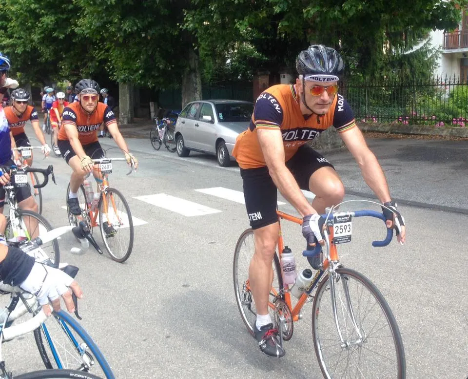
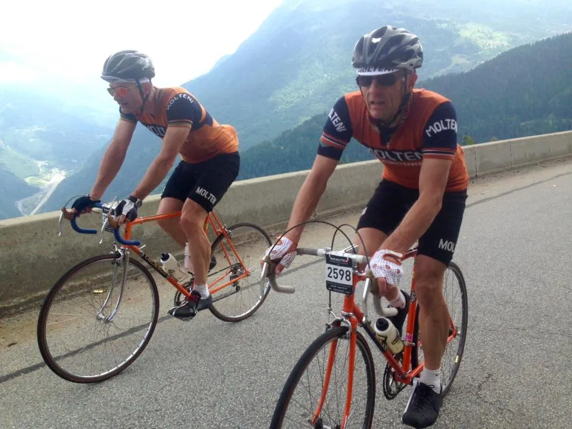
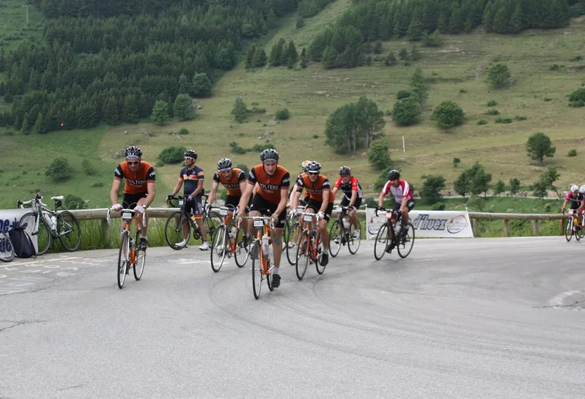
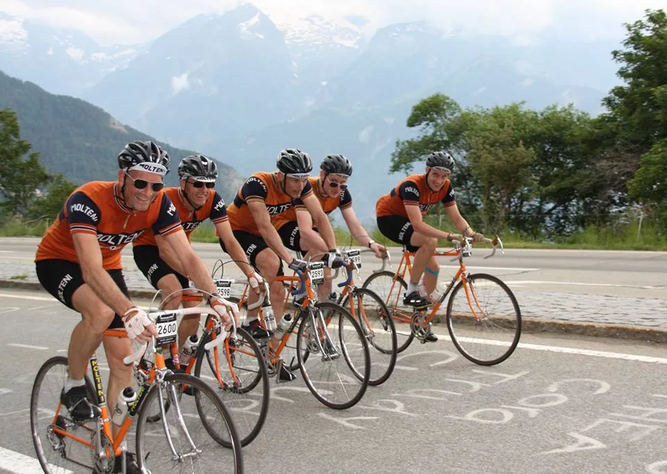
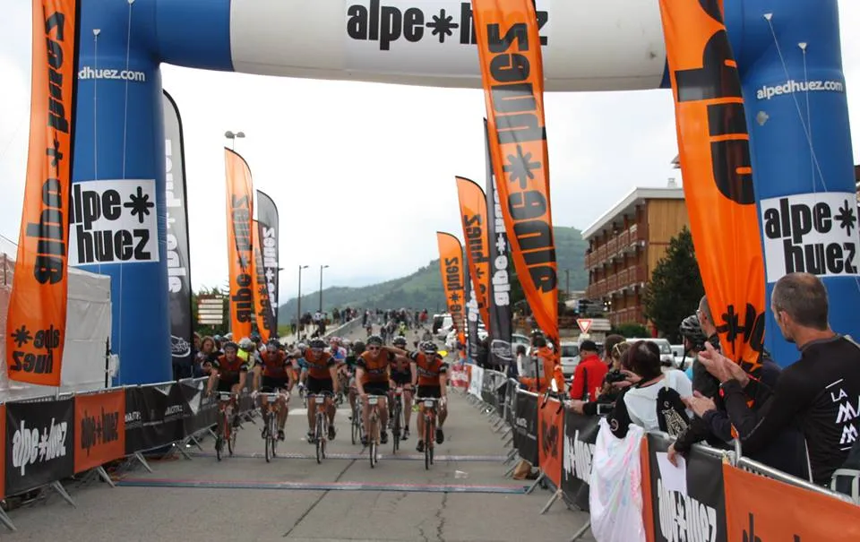

La Marmotte 2016 – 5 mand på stål og uld over 4 bjerge

Sæsonens største mål for fem af holdets ryttere har været La Marmotte 2016: At gennemføre et af verdens hårdeste (og ældste) motionsløb som hold. Og dermed sende en hyldest til Eddy Merckx og det hedengange Molteni-hold, som huserede her i de franske alper op gennem 70’erne.
La Marmotte 2016
Ruten til La Marmotte 2016 byder på Col du Glandon, Col du Telegraph, Col du Galibier og l’Alpe d’Huez på 10,5 kg. stålcykler og et bjerggear der lyder på 42/28. Holdet har trænet sammen det meste af foråret, og der er blevet lagt taktik for væske, energi, dæktryk, hårfarve, vandfast mascara osv.

Holdkaptajn Niels Bjørnsteen er den mest erfarne med tre La Marmotte deltagelser under trøjen. Han skulle føre tropperne sikkert igennem.
Eigil kører for første gang i bjerge, og har trænet som en gal, for at blive klar. Kasper, Steffan og Grane har lidt erfaringer med bjergkørsel – men 5000 højdemeter med en gearing på 42/28 er alligevel anticiperet med en hvis respekt.
Torsdag – test af l’Alpe d’Huez.
Vi ankommer til l’Alpe d’Huez om torsdagen, hvor selve opkørslen skulle testes. Efter at have smidt overflødigt baggage på hotelværelset, triller vi nedad.
Men vi når ikke langt, før det begynder at regne. En kort byge, men nok til at vi også lige får prøvet at køre nedkørsel på våd vej.
Opkørslen gik fint. Benene var gode, gear 42/28 kunne trædes og med rolig træningsfart kørte vi op på 1:09. Kasper kørte ikke med; han skånede sit knæ, der har drillet i lang tid.
Fredag – fotoshoot og klargøring
Efter afhentning af startnumre havde vi en aftale med Mikkel Würtz, fotograf og grafisk designer. Han havde set os, da vi kørte op af l’Alpe d’Huez dagen før, og han ville gerne lave nogle fede billede med os.
Mikkels fotos er, udover af være i fantastisk kvalitet og lækre farver, også fantastisk vel komponeret. Vi har kun set et par få skud, men glæder os til at se resten.

Resten af dagen går med at klargøre cykler og depotposer. Kasper tester knæet flere gange, men er ikke helt sikker på om det kan holde. Han besluttede dog, at starte sammen med os dagen efter, og så se hvor langt knæet kan holde.
La bella Maria
Vores soigneure, Maria, laver den lækreste cykelmiddag til os: Kylling, tomatsauce og pasta – vi fylder depoterne til bristepunktet. De unge tog derefter et par øl i baren, mens de gamle tog en aften med ZDF-Hitparade på fjernsynet.
Lørdag – Raceday: La Marmotte 2016
Det er ikke de mest udhvilede ryttere der sidder og drikker morgenkaffe kl. 06.00. Natten var blevet brugt på at vende sig i sengen og sjatpisse (på toilettet). Men vi får vores kaffe og havregryn, og ruller ned af l’Alpe d’Huez mod starten i Le Bourg d’Oisans.
Starten går. Vi finder hurtigt ind i “Det Orange Eksprestogs” formation med kaptajn Bjørnsteen som lokomotiv – og afsted gik det de 15 km. mod bunden af Col du Glandon.
Col du Glandon bliver indtaget i et godt jævnt tempo. Alle er friske, og vi ligger sammen. Der er også overskud til at snakke og joke. Og ikke mindst nyde den fantastiske udsigt.
Vi når toppen kort efter at være blevet passeret af Jeppe Tolbøl fra AltOmCykling (læs hans beretning). Alle er ved godt mod – og ingen har haft kriser. I depotet får vi tanket på og fyldt lommerne.
Nedkørslen fra Col du Glandon er svær, lang og meget hård for hænder, skuldre og nakke. De gamle Campagnolo Nouvo Record bremser kommer på overarbejde. I bunden samles vi – og de gamle skal selvfølgelig lige sjatpisse.

Hvor er Eigil?
Forude ligger godt 30 km. i dalen inden vi tager hul på Col du Telegraph og Col du Galibier. “Det Orange Eksprestog” finder formationen og trækker gennem dalen.
Hurtigt har vi en lang hale af carbonister på slæb. De bliver dog sat, men henter os igen, da Eksprestoget igen tager en tissepause i Saint -Jean-de-Maurienne.
Kort før opkørslen til Col du Telegraph kører vi i vandepot. “Det Orange Eksprestog” kører ikke så langt på literen – og de gamle skulle lige sjatpisse igen igen.
Col du Telegraph bliver kørt i et godt tempo – og stadig i højt humør. På toppen skal der tankes op – og selvfølgelig sjatpisses. Men inden den korte nedkørsel til Valloire, går der ged i kommunikationen. Grane, Niels og Steffan er begyndt at rulle nedaf.

Kasper og Eigil skal lige have et par jakker på. Og her går det galt. Eigil har ikke fået slået den indre GPS eller høreapparatet til – og Kasper mister ham af syne.
Resultat: Da vi når depotet i Valloire er Eigil væk!
Årsag: Det viste sig, at Eigil stod og ventede på os i Valloire by – og vi stod og ventede på Eigil i Valloire depotet.
Det gik der så godt 45 min. med. Lige da Niels og Steffan skal til at trille tilbage for at lede efter Eigil – kommer han selv oksende op mod depotet.
Det viser sig, at trods mange måneders disciplinærtræning, formåede holdet ikke at overholde den eneste interne regel: “Slip aldrig Eigil af syne”. Og rigtignok, på de 3 km. ud af rutens 180 km. hvor Eigil var uden opsyn, skete det selvfølgelig. En streg i regning.
Uvejr på Galibier
Med lidt ekstra lang pause i benene, og fyldte tanke, begynder vi den lange opkørsel til Col du Galibier. Galibier er en led satan. Og endnu ledere blev den, da vi 5 km. fra toppen blev ramt af regnvejr og blæst.
Vi når toppen våde og kolde. Vores depot kort efter toppen lå i isnende kulde. Kun Kasper har lidt skiftetøj med i depotposen. Vi andre står stadig i vådt tøj og regnjakke. Vi skal ned i varmen. Hurtigt!
Vi ruller nedad – rystende af kulde og med regn og blæst piskende. En ambulance holder i vejsiden. Ambulancefolkene er ved af vikle et par ryttere ind i alufolie.
Lidt nede bliver det en smule varmere, men der hænger en sky. Vi forsvinder ind i skyen. Alt forsvinder, sigtbarheden er under 10 meter. Skyen er iskold – og endnu mere fugtig end regnen! Under skyen ser vi en café længere nede af bjerget.
Steffan er først nede. Han stiller sig og får viftet os andre ind. Inde i cafeen er der 200-300 andre ryttere, der har fået samme behov. Mange står og ryster. Andre kan næsten ikke holde den varme kakao stille, de lige har købt.
Ripper hylderne for turistbrochurer
Vi bliver på cafeen en halv times tid. Vi får varmen en smule. Men vi er ikke meget for at skulle ud i kulden igen. Men vi må ned i varmen. Kasper har ringet til Maria, og hun kan melde om sol og over 20 grader i Le Bourg d’Oisans.
Det hjælper på motivationen. Niels og Grane tænker ud af boksen: De ripper et stativ med turistbrochurer, og propper den ind på mave og arme.
Den fortsatte nedkørsel er til at holde ud. Det første stykke er koldt, men så bryder solen igennem. Humøret stiger – og der jokes. Bred vej, god asfalt, bløde sving og ingen trafik.
Vi stopper ved en lille by og tager jakkerne af – og turistbrochurerne. Det var alligevel lidt ekstremt. Og pludselig kan man, på en ny og bedre måde, forstå nogle af cykelsportshistoriens store bedrifter, hvor ryttere har kørt nedkørsler i regn og kulde – eller sne.
Sol og Alpe d’Huez
Nedkørslen mod sidste bjerg, l’Alpe d’Huez, går som en leg. Solen varmer os. Tørre vores tøj. Alt er godt – og vi er klar til den sidste styrkeprøve.
Kasper har kæmpet hele dagen med sit knæ. Det har smertet let. Men han finder nye måder af træde på for at aflaste. Men Kasper kører også efter rule #5. Han æder smerten.
Da vi når Alpe d’Huez lyder meldingen fra Kasper, at han gerne vil sætte tempoet, for at kunne begrænse smerten. Det får han selvfølgelig ok til.

Men Kaspers tempo for at begrænse smerten viser sig at være højt. Kasper er gået ind i sig selv. Trance. Vi ligger og overhaler alle på vej op af l’Alpe d’Huez. Holdet kan ane målstregen for La Marmotte 2016.
Med godt 3 km. igen står vores Maria. Verdens bedste Maria! Hun er kørt ned for at tage fotos. Hun tager et par lækre billede. Så hopper hun op på cyklen. Kører op til os – og forbi os, for at hoppe af længere oppe og tage nye fotos.

Det gør hun også en tredje gang. Hun når op og hen til målstregen lige før vi triller samlet under det store oppustelige målbanner, der symboliserer at vi rent faktisk gjorde, og fuldførte, den plan vi lagde i efteråret.

Epilog: La Marmotte 2016
La Marmotte 2016 var en episk tur. En tur i varme, regn og kulde. En tur i glæde, frygt og forløsning. Det var helt fantastisk at køre løbet som et hold. Vi blev sammen. Bakkede hinanden op. Hjalp hinanden – og nød at være sammen som et hold.
Vi mødte utroligt mange positive tilkendegivelser fra forskellige nationaliteter. Fra rigtig mange englændere. Men flest fra danskere. Det var virkelig fedt, at få alle de positive kommentarer fra de danske ryttere. Tak!
Vi vil også sende en stor tak til PP Cycling Tours. De leverer et fuldendt produkt, hvor der er tænkt på alt. Flot. Tak.